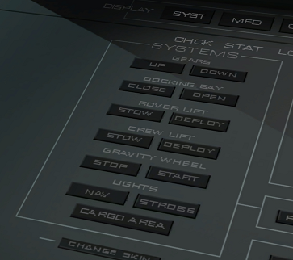
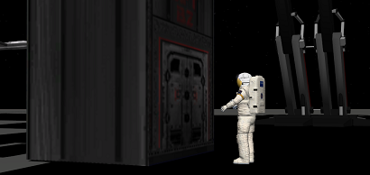
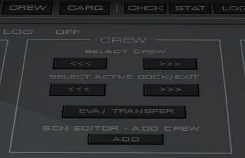
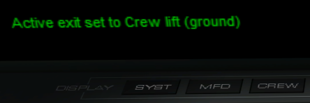
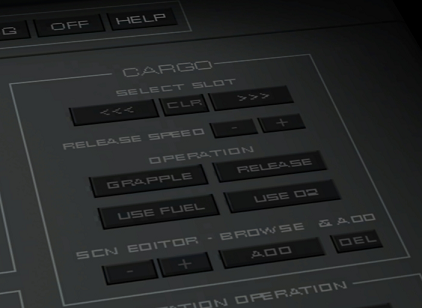

Arrow Freighter操作ガイド (SYSTEMS/CREW/CARGO)
3Dコクピット右側パネルのボタンから、船の各種システムを操作できます。
SYSTEMS

| GEARS | 着陸脚 |
| DOCKING BAY | ドッキングベイ |
| ROVER LIFT | 探査車エレベーター |
| CREW LIFT | 人員エレベーター |
| GRAVITY WHEEL | 睡眠区画の人工重力 |
| LIGHTS | 照明 |
ドッキングベイとふたつのエレベーターは、UMMUが船の真下に立ってEnterを押すことでも操作可能。
人員用エレベーターの前に立ってキーボードEを押すと、UMMUを乗せることができる。

ROVER LIFTで収容できるのはAzure Roverのみで、ほかの車両は使えない。
また、UMMUが乗ったままだとRoverを収容できない。
ドッキングベイには、DG4やXR2など小型の宇宙船が収容できる。
ただし、Orbiter2010の仕様により、ドッキングしたままでは着陸できない。
CREW（乗組員の選択・追加）

| SELECT CREW <<< or >>> | 乗組員を選択 |
| SELECT ACTIVE DOCK/EXIT <<< or >>> | エアロックを選択 |
| EVA/TRANSFER | EVA・ほかの宇宙船およびステーションに移乗 |
| ADD | 乗組員の追加 |
以下の5つのエアロックを選択できるが、着陸時はCrew lift(ground)しか使えない。

| Dock 1 (inside bay) | ドッキングベイ |
| Dock 2 (top middle) | 船体上部中央 |
| Dock 3 (top rear) | 船体上部後方 |
| Eva 01 (cargo zone) | 貨物区画 |
| Crew lift (ground) | 人員用エレベーター |
ADDボタンをクリックすると乗員を追加できる。
name（名前）、age（年齢）、function（職種）を設定する。
CARGO（貨物コンテナの追加・選択）
SELECT SLOT（スロットの選択）の<<< or >>>をクリックして、どの貨物コンテナ(cargo)を使うか、どこにcargoを追加するかを決める。

OPERATION（cargoの操作）
| GRAPPLE | 近くのcargoを搭載する |
| RELEASE | 選択したcargoを放出 |
| USE FUEL | cargoから燃料を補給 |
| USE O2 | cargoから酸素を補給 |
SCN EDITOR-BROWSE & ADD
| - or + | 追加するcargoの種類を選択 |
| ADD | 選択したcargoを追加 |
| DEL | 選択したcargoを削除 |